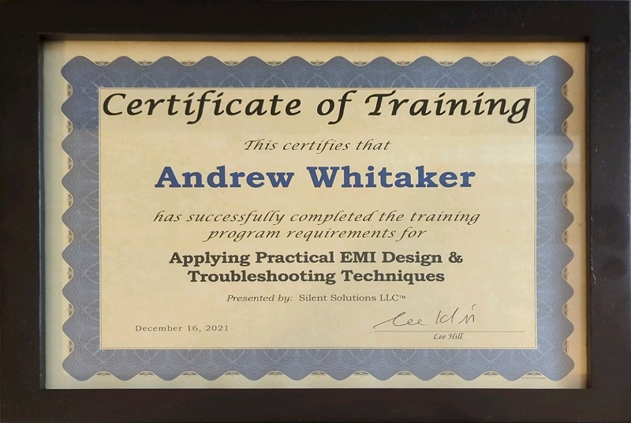

Andrew Whitaker



I had the pleasure of attending a synchronized video session of Silent Solutions' EMI/EMC crash course, presented by Lee Hill. This course took place over two very busy and informational days, and although the course is usually held in person, the remote version included all material and demonstrations!
I would highly recommend taking this class yourself if this is a topic relevant or interesting to you. I learned many things in this course that I will be sure to remember going forward, including:
Special thanks to Lee and the staff of Silent!